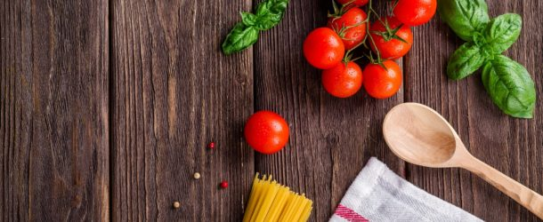

Proste Przepisy Kulinarne: Bezy

Popularne przepisy
Kurczak w sosie słodko-kwaśnym Pijane misie Konkurs - Drobiowe przysmaki Tort kokosowy z owocami Sernik z dyniąArchiwum
► 2016 (1) ► października (1) ► 2015 (1) ► marca (1) ► 2014 (15) ► grudnia (1) ► listopada (1) ► października (1) ► lipca (3) ► maja (2) ► kwietnia (1) ► marca (4) ► stycznia (2) ► 2013 (81) ► grudnia (9) ► listopada (7) ► października (3) ► września (2) ► sierpnia (3) ► lipca (7) ► czerwca (8) ► maja (10) ► kwietnia (6) ► marca (9) ► lutego (10) ► stycznia (7) ▼ 2012 (122) ► grudnia (13) ► listopada (8) ► października (11) ► września (14) ► sierpnia (19) ► lipca (7) ► czerwca (8) ▼ maja (14) Sałatka z winogronem, serem lazur i octem balsamic... Ciasto z truskawkami Jogurt z owocami Dorada pieczona Lody z musem z rabarbaru Zupa z botwinki Szaszłyki z grilla Szparagi z sosem holenderskim Deser z rabarbarem Bezy Tarta z truskawkami Muffiny z bananami Naleśniki ze szpinakiem Sałatka z kurczakiem ► kwietnia (14) ► marca (9) ► lutego (4) ► stycznia (1) ► 2011 (12) ► listopada (1) ► lipca (1) ► czerwca (1) ► maja (1) ► kwietnia (3) ► marca (3) ► lutego (1) ► stycznia (1) ► 2010 (5) ► grudnia (1) ► listopada (1) ► lipca (1) ► czerwca (1) ► maja (1)Chmura tagów
obiad (89) słodkości (88) drugie danie (81) przekąska (63) świąteczne (55) różne (52) ciasto (37) święta wielkanocne (32) święta bożego narodzenia (31) ciastka (16) pieczywo (13) zupa (12) muffiny (11) tort (9) bułki (6) recenzja (6) chleb (5) relacja (2)Prawa autorskie
Wszystkie prezentowane treści i zdjęcia są własnością autora niniejszej strony. Jakiekolwiek ich kopiowanie, przetwarzanie i rozpowszechnianie bez zgody jest zabronione.Autor: Kinga Kręciwilk © Blog kulinarny - Proste Przepisy Kulinarne. Obsługiwane przez usługę Blogger .